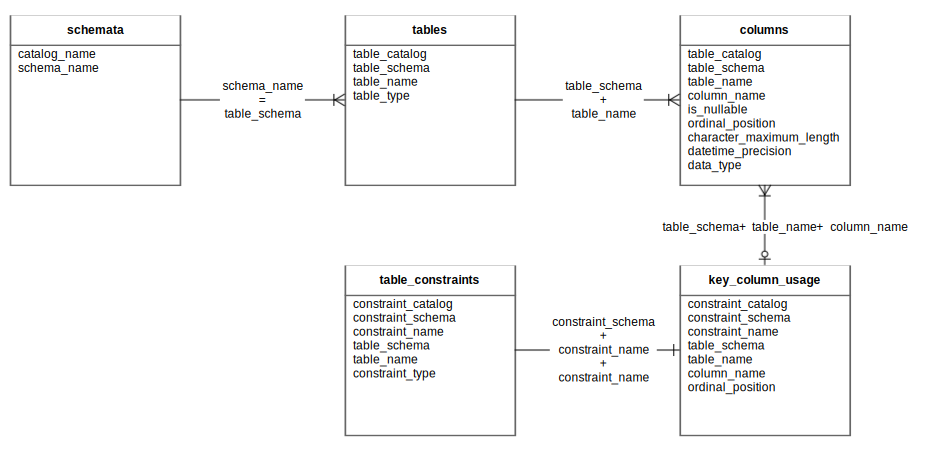

Набор системных представлений (INFORMATION_SCHEMA) предоставляет доступ к метаданным логической схемы данных и содержит следующие элементы:
Набор системных представлений и их свойств фиксирован и недоступен для изменения.
Системное представление schemata содержит список логических баз данных
окружения.
По каждой логической базе доступна следующая информация:
catalog_name — наименование каталога, в который помещена логическая база данных. Значение
по умолчанию — public;schema_name — наименование логической базы данных.Системное представление tables содержит список логических таблиц
и представлений
окружения. По каждой таблице или представлению доступна следующая информация:
table_catalog — наименование каталога, в который помещена таблица или представление.
Значение по умолчанию — public;table_schema — наименование логической базы данных, к которой относится таблица или представление;table_name — наименование таблицы или представления;table_type — тип объекта. Возможные значения: BASE_TABLE — логическая таблица, VIEW — логическое
представление.Системное представление columns содержит список столбцов логических таблиц и представлений окружения.
По каждому столбцу доступна следующая информация:
table_catalog — наименование каталога, в который помещена таблица или представление. Значение
по умолчанию — public;table_schema — наименование логической базы данных, к которой относится таблица или представление;table_name — наименование таблицы или представления, к которому относится столбец;column_name — наименование столбца, по которому предоставлена информация;is_nullable — признак того, может ли значение столбца иметь пустое значение (null). Возможные
значения: YES — столбец может содержать пустое значение; NO — столбец должен содержать непустое
значение;ordinal_position — порядковый номер столбца в таблице или представлении (нумерация начинается с 1);character_maximum_length — максимально допустимое количество символов (для строковых значений);datetime_precision — степень отображаемой точности значений типа TIMESTAMP. Возможное значение:
от 0 (точность до секунд) до 6 (точность до микросекунд).data_type — тип данных столбца. Возможные значения см. в разделе Логические типы данных.Системное представление table_constraints содержит список ограничений логических таблиц и представлений
окружения. По каждому ограничению доступна следующая информация:
constraint_catalog — наименование каталога, в который помещена таблица или представление
с ограничением. Значение по умолчанию — public;constraint_schema — наименование логической базы данных, к которой относится таблица или
представление с ограничением;constraint_name — наименование ограничения;table_schema — наименование логической базы данных, к которой относится таблица или представление
с ограничением;table_name — наименование таблицы или представления, к которому относится ограничение;constraint_type — тип ограничения. Возможные значения: primary key — первичный ключ, sharding key —
ключ шардирования.Системное представление key_column_usage содержит список столбцов окружения, с которыми связаны
какие-либо ограничения. По каждому столбцу доступна следующая информация:
constraint_catalog — наименование каталога, в который помещена таблица или представление
с ограничением. Значение по умолчанию — public;constraint_schema — наименование логической базы данных, к которой относится таблица
или представление с ограничением;constraint_name — наименование ограничения;table_schema — наименование логической базы данных, к которой относится таблица или представление
с ограничением;table_name — наименование таблицы или представления, к которому относится ограничение;column_name — наименование столбца, на который накладывается ограничение;ordinal_position — порядковый номер поля в ключе (нумерация начинается с 1).На рисунке ниже показана взаимосвязь системных представлений.

Взаимосвязь системных представлений